Standing Up a Platform Engineering Lab on EKS
The plan, the bugs, and the fixes.
01Why we built it
What I keep coming back to with platform-engineering-lab is that I wanted it to reflect what a real internal Platform Engineering team actually owns day to day — not the polished conference-talk version of the job.
A lot of Kubernetes portfolio projects stop at “the cluster deployed successfully.” That was never the point here. The goal was to build the full operational stack the way a real platform team would have to support it in production: multi-environment AWS infrastructure provisioned through Terraform, remote state management, KMS encryption, OIDC federation, IRSA, NAT egress, private multi-AZ networking, and then the entire in-cluster platform layer on top of it.
That meant ingress, external DNS, TLS automation, secrets management, autoscaling, policy enforcement, observability, distributed tracing, centralized logging, backup/recovery, and cost visibility. GitOps is pull-based through Argo CD. CI/CD runs through reusable GitHub Actions workflows authenticated to AWS through OIDC instead of static credentials. Policies are enforced at multiple layers — in CI, at Kubernetes admission time, and at runtime.
The architecture document (_project-docs/architecture/00-overview.md) was intentionally opinionated about scope. I didn’t want this to become a “collect every CNCF logo” exercise. The design goal was operational realism rather than feature sprawl.
The repository structure mirrors how a real platform organization would separate ownership domains. Multi-environment overlays for dev, staging, and production were designed in from the beginning instead of being retrofitted later. Credential management was another hard requirement: no long-lived AWS keys anywhere in the system. GitHub Actions authenticates to AWS through AssumeRoleWithWebIdentity, workloads inside the cluster use IRSA, and application secrets are pulled dynamically from AWS Secrets Manager through External Secrets Operator.
The intended audience for the project is senior platform, SRE, and DevOps engineers reviewing the work from an operational perspective. I wanted the project to demonstrate end-to-end ownership rather than just familiarity with tools or certifications.
That set a much higher bar for the implementation. The environment needed to actually deploy cleanly from terraform apply, function correctly after bootstrap, and tear down cleanly through terraform destroy. Costs needed to be reasonable and explainable. Operational issues needed to be debugged properly rather than hidden behind screenshots or mocked outputs.
A big part of the value of the project came from the failures and troubleshooting along the way. We hit Terraform dependency cycles and had to redesign module boundaries to break them cleanly. IAM policies repeatedly failed because of missing edge-case permissions that only surfaced during runtime testing. Helm hooks occasionally stalled and left releases in partially deployed states that required manual debugging. Some container registries changed authentication behavior midstream, which forced updates to pull policies and automation logic.
Those problems ended up being just as important as the successful deployments because they reflected the kind of operational work platform teams actually spend their time doing.
The detailed component-by-component reference material lives in eks-and-platform-deep-dive.md. This document is meant more as the engineering field notes behind the project — the design decisions, operational tradeoffs, mistakes, debugging sessions, and lessons learned while building and stabilizing the platform end to end.
02The plan
We layered the build before writing any Terraform. The layering rule, copied straight from _project-docs/architecture/01-layered-build-order.md:
Layer 5 Agentic / Self-Service agents/, platform-services/ Layer 4 Reliability / FinOps reliability/, finops/ Layer 3 Security / Observability security/, observability/ Layer 2 Workloads + GitOps kubernetes/, gitops/, cicd/ Layer 1 Infrastructure (cloud) infrastructure/
A failure at layer N never gets fixed by changing layer N+1. The dependency direction is strictly downward. Falco doesn’t get to demand a network change. Backstage doesn’t get to demand a Prometheus tuning. When a request would skip a layer, we surface the dependency first.
On top of the layers, four phases:
| Phase | Name | What ships |
|---|---|---|
| 1 | MVP | VPC, EKS, ingress-nginx, cert-manager, ExternalDNS, ArgoCD, kube-prometheus-stack, Loki, Kyverno baseline |
| 2 | Reliability | OpenTelemetry, Tempo, Velero, OpenCost, chaos engineering, DR drills |
| 3 | Internal Platform | Backstage, self-service templates, golden paths |
| 4 | Agentic | LangGraph orchestration, intent parser, automated remediation, FinOps-aware planning |
Phase 1 intentionally skips multi-region, GPU pools, service mesh, Tempo, Falco, advanced OPA, ephemeral envs. The temptation to add Falco “while we’re in there” with Kyverno is constant. I say no every time.
Apply cadence
The second decision was the apply cadence. We could’ve implemented all 45 sprints on disk before any AWS apply — or we could apply each sprint as it landed. We chose the latter and wrote it into Directive 02:
implement → local lint → apply to dev → validate → fix → destroy → next sprint.
Never more than one sprint sits implemented-but-unapplied. Monolithic-first hides bugs across 600 files; layer-by-layer surfaces them in 25-file chunks. You can’t validate Helm values without a live cluster — helm template will not tell you that ArgoCD’s hook tracker is going to deadlock on a hook-succeeded Job. Only the cluster will tell you that.
Per-loop budget: 2–6 hours wall-clock, $5–25 AWS, $0–5 LLM. Escalation trigger: three failed apply attempts or more than eight hours debugging — pause and reassess, because the failure is probably structural, not a typo. The cluster is destroyed at the end of each loop. Phase 0 baseline (S3 state, KMS, ECR, CUR delivery) stays up at about $5/month. An idle EKS cluster runs $0.10/hour on the control plane plus two m6i.large nodes plus NAT plus EBS plus load balancers — roughly $3–4 per twelve-hour working day. We don’t leave it running overnight.
The directive also separates Claude’s role from mine. Claude writes code. I run make tf-apply. The apply step spends AWS money; it is human-driven on purpose.
03What got built
Phase 1’s block diagram, with a few annotations from where we are now:
┌─────────────────────────────────────────────────────────────────────────────┐
│ Operator workstation │
│ │ make tf-apply / kube-context / argocd app sync │
└─────┬───────────────────────────────────────────────────────────────────────┘
│ │
▼ ▼
┌─────────────┐ ┌──────────────────────┐
│ GitHub repo │ PR / push │ GitHub Actions │
│ (monorepo) │ ─────────────► │ (reusable WFs, OIDC)│
└─────────────┘ └──────────┬───────────┘
│ AssumeRoleWithWebIdentity
▼
┌─────────────────────── AWS Account / us-west-2 ──────────────┐
│ │
│ IAM/OIDC trust KMS (eks · ebs · s3 · secrets) │
│ S3 pel-tfstate-* pel-loki-* pel-flowlogs-* pel-alb-logs-* │
│ ECR pel/example-app pel/ttl-teardown ... │
│ Route 53 (zone deferred) Secrets Manager CloudWatch Logs │
│ │
│ ┌─────────────── VPC 10.0.0.0/16 · 3 AZs ─────────────────────────┐ │
│ │ IGW ─► public subnets ─► NLB (ingress-nginx) ──┐ │ │
│ │ private subnets ◄─ NAT GW ─────────────────────┴► nodes │ │
│ │ │ │ │
│ │ ┌──────────── EKS Cluster pel-eks-dev (v1.34) ──────────────────┐ │ │
│ │ │ ns: argocd ns: platform-system ns: observability │ │ │
│ │ │ ns: kyverno ns: dev-apps / prod-apps │ │ │
│ │ └──────────────────────────────────────────────────────────────────┘ │ │
│ └──────────────────────────────────────────────────────────────────────┘ │
└────────────────────────────────────────────────────────────────────────────┘

pel-vpc-dev spanning 3 AZs.
pel-eks-dev on v1.34.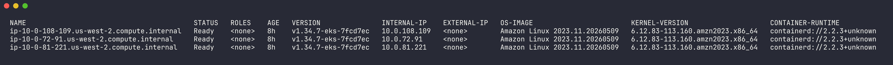
kubectl get nodes, private subnets only.The shape is deliberately unsurprising. VPC 10.0.0.0/16 across three AZs (us-west-2a/b/c). Three subnet tiers per AZ: public (IGW-attached, hosts NLBs), private (NAT egress only, hosts EKS nodes), intra (no internet at all, kept for future RDS / ElastiCache). Nodes never get public IPs. All egress through NAT. The EKS control plane endpoint is public but CIDR-restricted to my workstation.
The IRSA web is where the design earns its keep. Every controller that needs an AWS API gets its own IAM role, assumed via the cluster’s OIDC provider (oidc.eks.us-west-2.amazonaws.com/id/<id>). No node-role catch-all. Phase 1 roles:
| IRSA role | What it needs |
|---|---|
pel-irsa-aws-lbc-dev | ELBv2, EC2 SG ops |
pel-irsa-ebs-csi-dev | EBS volume lifecycle |
pel-irsa-external-secrets-dev | Secrets Manager, SSM |
pel-irsa-loki-dev | S3 (Loki chunks) |
pel-irsa-cluster-autoscaler-dev | ASG describe/scale |
pel-irsa-falcosidekick-dev | SNS / EventBridge |
pel-irsa-arc-runners-dev | ECR push, S3 cache |
GitHub Actions has three roles assumed via OIDC: pel-gha-tf-plan-role, pel-gha-tf-apply-role, pel-gha-ecr-push-role. No aws_access_key_id exists anywhere in the lab. The entire trust web can be rotated by re-issuing the OIDC provider.
04Where it broke — sessions 1 through 3
The plan is the easy part. Here’s what broke between intent and a working cluster, roughly in the order we hit it. Each one is recorded in _project-docs/sessions/. The pattern across them is more interesting than any individual fix: implicit ordering across components, registry and image churn we don’t control, IAM policies that lag the controllers consuming them, and Helm hooks racing the GitOps system that’s supposed to track them.
4.1 — Phase 0 state was sitting on local disk
data "terraform_remote_state" "phase0" returned empty. The plan acted like the world was unprovisioned even though we’d run phase-0-baseline an hour earlier.backend "s3" block in phase-0-baseline/versions.tf. The bootstrap created the S3 bucket pel-tfstate- but never used it. State was happily sitting in a local terraform.tfstate next to the code, where Phase 1 had no way to read it.backend "s3" blocks to both phases, then terraform init -migrate-state.pel-tfstate-* doesn’t make Terraform write to it.4.2 — EKS 1.31 had quietly entered extended support
InvalidParameterException: kubernetes version "1.31" is only supported under extended supportaws eks describe-cluster-versions before pinning. K8s minors cycle every ~3 months and extended support kicks in ~14 months after release. Pin a version, but check it on every fresh build.4.3 — The GitHub OIDC provider already existed in the account
EntityAlreadyExists: Provider with url https://token.actions.githubusercontent.com already existsvisdoc) had already created it. Our iam-github-oidc module declared the provider as a resource and tried to own it.data "aws_iam_openid_connect_provider" instead of resource. Consume, don’t own.4.4 — Security group rule descriptions had “invalid” characters
a-zA-Z0-9 . _ - : / ( ) # , @ [ ] + = & ; { } ! $ * and spaces. The original description used → (U+2192). First patch replaced it with -> — turns out > isn’t in the allowed set either. Second patch used to. Finally valid.4.5 — EBS KMS key missing kms:CreateGrant
Client.InvalidKMSKey.InvalidState → NodeCreationFailure: Instances failed to join the kubernetes cluster. Managed node group went CREATE_FAILED after the ASG retried ten times. Nothing in the error message points at the KMS key policy.kms:CreateGrant on the key. The pel-ebs key policy granted Decrypt and Encrypt but not CreateGrant.condition {
test = "Bool"
variable = "kms:GrantIsForAWSResource"
values = ["true"]
}
condition {
test = "StringEquals"
variable = "aws:PrincipalAccount"
values = [data.aws_caller_identity.current.account_id]
}The GrantIsForAWSResource condition keeps the perm scoped to AWS services (we’re not handing out CreateGrant broadly); the principal-account condition keeps it tight to the lab account.
Lesson: when a KMS-encrypted resource fails opaquely, suspect CreateGrant. The error message points at “key state” not “key policy,” which is misleading. I added a checklist item to the EKS module: any time a node group touches an encrypted volume, verify the key policy includes the grant conditions above.
4.6 — The Helm hook bootstrap deadlock
This is the most instructive bug of the build, and I bring it up first when I walk anyone through the repo. It needed reasoning across multiple components, which is the whole point.
After the ArgoCD app-of-apps sync, five Applications stuck:
cert-manager— SyncFailedkube-prometheus-stack— SyncFailedtempo— SyncFailedingress-nginx— Missing (hook stuck)argocd— Degraded (Ingress rejected)
What was going on: a circular dependency cluster we’d built ourselves by enabling sensible-looking options in each chart independently.
- cert-manager failed because its Helm chart wanted to create a
monitoring.coreos.com/ServiceMonitor— but that CRD is owned by kube-prometheus-stack, which hadn’t installed yet. - kube-prometheus-stack failed because its admission webhook needs
cert-manager.io/CertificateandIssuerCRs — but cert-manager hadn’t installed. - tempo had the same ServiceMonitor problem as cert-manager.
- ingress-nginx was waiting on a pre-install hook (
admission-createJob) that never completed visibly. The chart’shook-delete-policy: hook-succeededpolicy raced ArgoCD’s hook tracker — the Job ran, succeeded, got deleted by the chart’s own policy, and ArgoCD was left waiting forever for a resource that no longer existed. - argocd’s Ingress was rejected by the LBC ValidatingWebhookConfiguration because
IngressClass "nginx"didn’t exist — ingress-nginx hadn’t installed.
cert-manager ───SM CRD needed──► kube-prometheus-stack kube-prometheus-stack ───cert CRDs needed──► cert-manager ingress-nginx ───IngressClass needed──► argocd Ingress validation
The fix (commit 0c36ca3) was to disable ServiceMonitor in the three charts that don’t need it at bootstrap:
# kubernetes/helm/cert-manager/values-dev.yaml
prometheus:
enabled: false
servicemonitor:
enabled: false
# kubernetes/helm/ingress-nginx/values-dev.yaml
controller:
metrics:
enabled: true
serviceMonitor:
enabled: false
# observability/tempo/values-dev.yaml
serviceMonitor:
enabled: falseThat breaks the loop. cert-manager installs (no SM dependency), cert-manager CRDs become available, kube-prometheus-stack installs, ServiceMonitor CRDs become available, we re-enable SM in those three charts in a follow-up sync.

Lesson: when a Helm chart can produce CRs from another chart, you have implicit ordering. ArgoCD sync waves are the proper fix; toggling optional features off is the pragmatic fix. The four charts that succeeded despite enabled SM (external-dns, external-secrets, metrics-server, AWS LBC) all use ServerSideApply with a sync strategy that tolerates missing CRDs — the failures used a stricter atomic apply. There’s no single answer; you have to know which charts in your stack can survive a missing CRD reference and which can’t.
4.7 — The ingress-nginx admission webhook ghost-stuck
This one is a follow-on to the bootstrap deadlock, but the mechanism is different. ingress-nginx Application stayed in Progressing forever. The pod was Running and healthy. The chart’s admission-create pre-install Job had run, succeeded, and been cleaned up. But ArgoCD’s Application status was waiting for a hook that no longer existed.
The ingress-nginx chart installs its admission webhook bootstrap as a Helm pre-install hook with helm.sh/hook-delete-policy: hook-succeeded. The Job generates a TLS cert for the admission webhook, registers the secret, then deletes itself. That works when Helm is driving. With ArgoCD in front, ArgoCD’s hook tracker watches the Job lifecycle — and the chart’s own delete policy gets there first. ArgoCD sees the Job vanish from under it and never gets a chance to mark the hook Healthy. Application sits Progressing.
Fix (commit 56f3a93): disable the admission webhook bootstrap entirely. The controller still validates configs at NGINX reload time — that’s the actual safety net. The admission webhook is a nice-to-have early-warning layer.
# kubernetes/helm/ingress-nginx/values-dev.yaml
controller:
replicaCount: 1
admissionWebhooks:
enabled: false # bootstrap-hook job ghost-stuck in ArgoCD;
# pod validates configs at reloadLesson: chart hook semantics designed for helm install don’t always survive the GitOps wrapper. When a hook stalls and the pod is healthy, look at the chart’s delete-policy first.
4.8 — The Bitnami Docker Hub policy change
Textbook supply-chain story. The Velero Helm chart’s pre-install Job uses a kubectl-based pod that does CRD bookkeeping. The chart’s default kubectl image was floating, which we’d already fixed once in session 2 (commit 1903081) by pinning to bitnami/kubectl:1.32.
Then today, the pin broke. ErrImagePull: manifest unknown. Bitnami changed Docker Hub publication policy in 2025; the 1.32 tag was effectively yanked from the public registry. A lot of public charts had the same morning.
First attempt: switch to docker.io/rancher/kubectl:v1.32.0. Rancher publishes an actively maintained kubectl image. Image pulled. Init container immediately failed with:
exec: /bin/sh: no such file or directoryRancher’s kubectl image is scratch. It contains the kubectl binary and nothing else. The Velero chart’s CRD-upgrade Job invokes command: ["/bin/sh", "-c", ...]. No shell, no init.
Second attempt: switch to alpine/k8s:1.32.4. Full Alpine base with /bin/sh and a kubectl binary. Image started. Then it tried to cp the binary into the velero/velero runtime image and exec it there:
exec: kubectl: not a dynamic executableThe Velero chart’s upgrade-crds Job uses a clever-but-fragile pattern: copy sh and kubectl from a kubectl image into the Velero distroless image at runtime, then exec them there. That only ever worked with bitnami’s image because its binaries were Debian-based and glibc-compatible. Alpine’s musl-linked binaries don’t run in distroless. Rancher’s scratch had no sh to copy. There is no kubectl image in 2026 that simultaneously (a) has /bin/sh, (b) ships musl-or-glibc-compatible-with-distroless binaries, and (c) is still being published.
Final fix (commit db6b385): disable the upgrade Job entirely.
# reliability/velero/values-dev.yaml
upgradeCRDs: false # chart's main install lays down CRDs; the upgrade Job
# copies sh/kubectl between two distinct base images, which
# breaks on every modern non-bitnami kubectl image.
kubectl:
image:
repository: docker.io/alpine/k8s
tag: "1.32.4"The chart’s main install path lays down the CRDs. The upgrade Job is an optional follow-up step for in-place chart upgrades — useful in production where you don’t reinstall the chart, irrelevant in a dev lab where every fresh apply lays everything down anew.
Three lessons rolled into one bug:
- Image registries change policy. A tag you pinned in 2025 may not exist in 2026.
- Replacing one image with another is not equivalent. Their base layers matter. Scratch ≠ Alpine ≠ Debian.
- A chart that copies binaries between images at runtime is making assumptions about both images. When the source image changes, the copy can fail in ways the chart author never anticipated.
4.9 — ArgoCD self-management chart drift
ArgoCD self-management is one of the prettier patterns in GitOps: the cluster reconciles ArgoCD onto itself, so ArgoCD upgrades become a Git PR like everything else. It worked for several sessions. Then today it stopped.
argocd-repo-server pods went CrashLoopBackOff. Init container copyutil exited non-zero immediately. ArgoCD kept respawning the broken ReplicaSet because automated self-sync was re-applying the bad spec from Git.
The argo-cd Helm chart 7.* re-renders the repo-server init container with both command and args set on the spec. The init container runs /bin/cp to lay down shared binaries; when the spec has both command and args, the resulting exec is cp arg1 arg2 arg3 arg4 arg5 — five positional arguments instead of the expected four. cp errors out, init fails, pod loops.
The Helm template output drifts between chart minor versions. Our pinned targetRevision was floating within 7.*. A point release re-rendered the spec and broke the init container.
Fix (commit 51abc8): disable automated sync on the argocd Application until I investigate the chart drift properly.
# gitops/applications/argocd.yaml
syncPolicy:
# Self-management disabled in phase-1 stabilization — argo-cd Helm chart 7.*
# produces a broken repo-server init container (command + args mixed) on
# re-render. ArgoCD installed via make argocd-bootstrap remains the source
# of truth until the chart drift is investigated in a follow-up sprint.
syncOptions:
- CreateNamespace=true
- ServerSideApply=trueThe cluster keeps running on the working ArgoCD pod from make argocd-bootstrap. We’ve broken the elegance — ArgoCD is no longer self-managed — but we’ve stopped the bleeding. Restoring self-management is a Phase 2 task: pin targetRevision to an exact patch version (not 7.*), validate helm template output before each bump, re-enable automated self-sync once a bump is known clean.
Lesson: targetRevision: "*" (or any wildcard) on the chart that manages your GitOps controller itself is unsafe. The blast radius of a bad render is the entire reconciliation loop. We’re tightening the pinning convention across the repo — every Application either pins an exact chart version or pins a patch-level constraint like 7.6.x.
4.10 — AWS LBC v2.7 added DescribeListenerAttributes
The AWS Load Balancer Controller is the in-cluster controller that reconciles Service type=LoadBalancer and Ingress objects into real ALBs/NLBs. Its IRSA policy (pel-irsa-aws-lbc-dev) had been written in session 2. We thought it was complete. It wasn’t.
ingress-nginx’s EXTERNAL-IP stuck at <pending> indefinitely. kubectl describe svc showed repeated FailedDeployModel events. No NLB ever appeared in aws elbv2 describe-load-balancers.
After enough digging, the LBC reconciler logs showed AccessDenied on elasticloadbalancing:DescribeListenerAttributes and elasticloadbalancing:ModifyListenerAttributes. Neither was in our IRSA policy. Both were added to the controller’s required-permissions list in v2.7 (mid-2025). Our policy had been written against the v2.4 docs and never refreshed when we bumped the controller.
Fix (commit bfecd99):
# infrastructure/phase-1-mvp/modules/iam-irsa/main.tf
"elasticloadbalancing:DescribeLoadBalancers",
"elasticloadbalancing:DescribeLoadBalancerAttributes",
"elasticloadbalancing:DescribeListeners",
"elasticloadbalancing:DescribeListenerCertificates",
"elasticloadbalancing:DescribeListenerAttributes", # new in v2.7
"elasticloadbalancing:DescribeSSLPolicies",
"elasticloadbalancing:DescribeRules",
"elasticloadbalancing:DescribeTargetGroups",
"elasticloadbalancing:DescribeTargetGroupAttributes",
"elasticloadbalancing:DescribeTargetHealth",
"elasticloadbalancing:DescribeTags",
"elasticloadbalancing:DescribeTrustStores", # new in v2.7
"elasticloadbalancing:ModifyListener",
"elasticloadbalancing:ModifyListenerAttributes", # new in v2.7
"elasticloadbalancing:AddTags",Three new perms — two Describe, one Modify. With those added, the NLB provisioned in under three minutes.
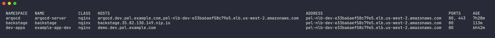
Lesson: IAM policies for in-cluster controllers go stale with chart bumps. Every controller upgrade should diff the upstream’s recommended IAM JSON against your committed policy. I’m adding this to the chart-bump checklist. There’s a real argument for sourcing the policy JSON directly from the upstream chart’s docs in CI — that’s Phase 2 hardening work.
4.11 — Falco rules_file vs rules_files
A one-character bug. Falco crash-looped 144 times before I caught it.
Container logs:
fatal: both rules_files and rules_file keys set in /etc/falco/falco.yamlThe Falco chart 0.36+ ships a default config with rules_files: (plural). Our values-dev.yaml was overriding with rules_file: (singular, deprecated). Both keys ended up in the merged config. Falco refuses to start when both are present.
Fix (commit bfecd99): switch the values key from singular to plural.
Lesson: when a tool deprecates a config key in favor of a renamed version, the merger behavior matters. Some tools quietly accept both. Others treat both-present as fatal. Always check release notes when bumping a chart with historical singular/plural keys.
4.12 — The gp3 StorageClass that wasn’t there
Prometheus and Grafana PVCs Pending forever on a fresh cluster. kubectl describe pvc: no storage class found.
The EBS CSI driver installs but does not create a default StorageClass. Older EKS releases shipped a gp2 SC as part of the legacy in-tree volume provisioner; newer ones (1.25+ with CSI-only) don’t. Our Phase 1 charts all request gp3. The SC has to be created out-of-band.
apiVersion: storage.k8s.io/v1
kind: StorageClass
metadata:
name: gp3
annotations:
storageclass.kubernetes.io/is-default-class: "true"
provisioner: ebs.csi.aws.com
volumeBindingMode: WaitForFirstConsumer
reclaimPolicy: Delete
allowVolumeExpansion: true
parameters:
type: gp3
encrypted: "true"volumeBindingMode: WaitForFirstConsumer is the important bit — it defers AZ selection until the consuming pod is scheduled, so the EBS volume lands in the same AZ as the pod that mounts it.
I considered putting the SC into Terraform (a Kubernetes provider apply after EKS comes up) or into ArgoCD as wave −1. For now it’s documented in the rebuild runbook because the apply step is human-driven anyway. A future hardening sprint moves it into IaC.
Lesson: “it worked in the cluster I tested” is not portable. Anything that depends on a default-named StorageClass must either document the manual step, include the SC in its own values file, or apply the SC as part of bootstrap.
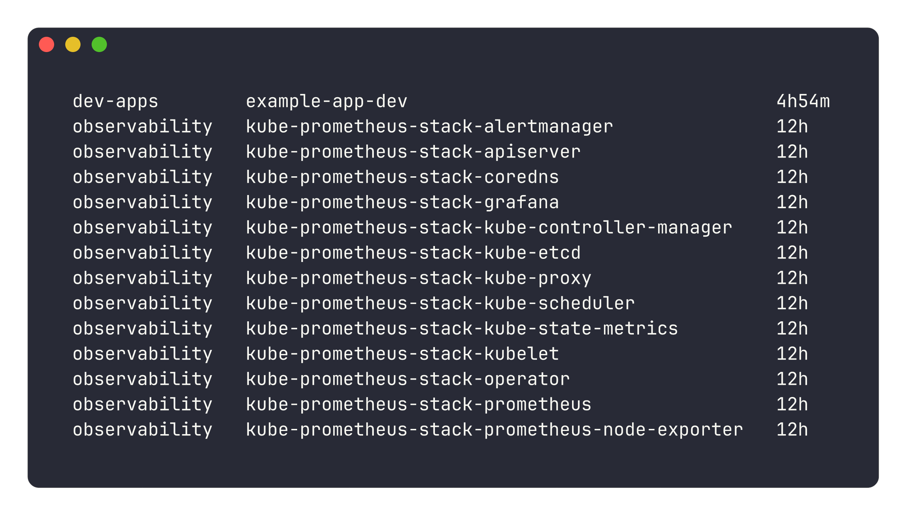
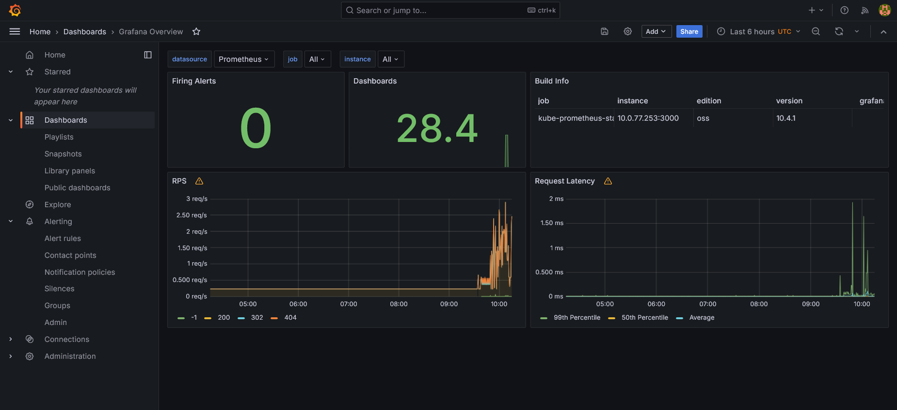
4.13 — ArgoCD CLI vs port-forward fragility
Not a bug in any one component — a process bug. I kept reaching for argocd app sync to trigger reconciliations.
argocd app sync repeatedly failed with Argo CD server address unspecified or hung on gRPC handshake. Login state was per-shell. Port-forward had to use --address 0.0.0.0 to be reachable from a separate terminal. I was burning a non-trivial fraction of debug time on CLI plumbing instead of the actual problem.
The workaround was to skip the CLI entirely. The Application CR is just a Kubernetes resource; kubectl can trigger a sync by patching its operation field:
kubectl -n argocd patch application <name> --type merge \
-p '{"operation":{"sync":{"prune":true,"syncStrategy":{"apply":{"force":true}}}}}'That’s it. No port-forward, no login, no per-shell state. Works as well from CI as from a laptop.
Lesson: when a CLI is fighting you, remember it’s a thin wrapper over an API. The API is usually saner. Our session notes now default to kubectl patch application rather than argocd app sync.
05Patterns we kept seeing
A few common shapes repeated across these incidents. They’re worth naming on their own, because they apply well beyond this specific lab.
Shared AWS accounts mean data, not resource, for anything globally unique
OIDC providers, certain S3 bucket name patterns, certain IAM roles. The right default in a multi-tenant account is “look up, don’t create” unless you explicitly own the resource. The GitHub OIDC provider conflict cost us a Terraform refactor I should have written in the first place.
Cross-chart CRD references are implicit ordering; ArgoCD sync waves are the explicit fix
Optional-feature toggles are the pragmatic fix when sync waves aren’t enough. I’ve now classified each Phase 1 chart by what it produces (CRDs, webhooks, ingress classes) and what it consumes from other charts, and the sync-wave numbers fall out mechanically.
targetRevision: "*" is poison on a chart that manages your control plane
ArgoCD self-management was the prettiest pattern in the repo until a chart minor break took us down. Pin patch versions on anything in the GitOps critical path. Floating tags are fine for leaf-node application charts — not for platform.
Image registries change policy; build a substitution plan, not a single pin
The Bitnami cascade was three commits and four registry attempts. The lesson isn’t “Bitnami did us wrong” — it’s that any chart that ships a default image reference to a third-party registry is one policy change away from breaking. In lab-grade we tolerate this; in production we’d mirror critical images into our own ECR and pin against that.
Admission webhooks layer in unexpected ways during bootstrap
The argocd Ingress was rejected because the LBC webhook validated that IngressClass nginx existed before ingress-nginx had installed. The Prometheus admission webhook needs cert-manager. The ingress-nginx admission webhook needs to mint its own cert. Each webhook is fine in isolation; the combination has to be sequenced. I now treat any chart that ships a ValidatingWebhookConfiguration as a sync-wave participant by default.
IAM policies for controllers go stale
Chart bumps add API calls. The LBC v2.7 lesson is going to repeat for any controller without a policy-diff process. I’m sketching a CI step that compares the committed IRSA policy against the upstream controller’s recommended policy JSON on every chart-bump PR.
The hook-tracker race is a class of bug, not a one-off
Helm hooks with hook-delete-policy: hook-succeeded race ArgoCD’s hook tracker. We hit it on ingress-nginx; we’ll hit it again on any chart that uses the same pattern. The portable answer is to either disable the chart-side delete policy or to wrap the hook in an ArgoCD-aware Job manifest of our own.
06Where we landed
Status as of session 3:
- Phase 0 baseline — applied and stable. Sits at ~$5/month idle.
- Phase 1 MVP — applied. EKS v1.34, 2×
m6i.largenodes, full IRSA web, ArgoCD bootstrapped, app-of-apps wired. - Sync state — ArgoCD core, cert-manager, kube-prometheus-stack, tempo, opencost, external-dns, external-secrets, LBC, chaos-mesh, goldilocks, ARC, arc-runner-set all Healthy. ingress-nginx and velero unblocked by today’s session. argocd self-management intentionally disabled until the chart-drift investigation completes.
- Phase 2 reliability — partial. Tempo, OpenCost, Velero, Chaos Mesh, Falco are wired and reconciling. DR drills and chaos experiments are Phase 2 follow-on sprints.
- Phase 3 and 4 — ahead per the layered plan. No work started, on purpose.
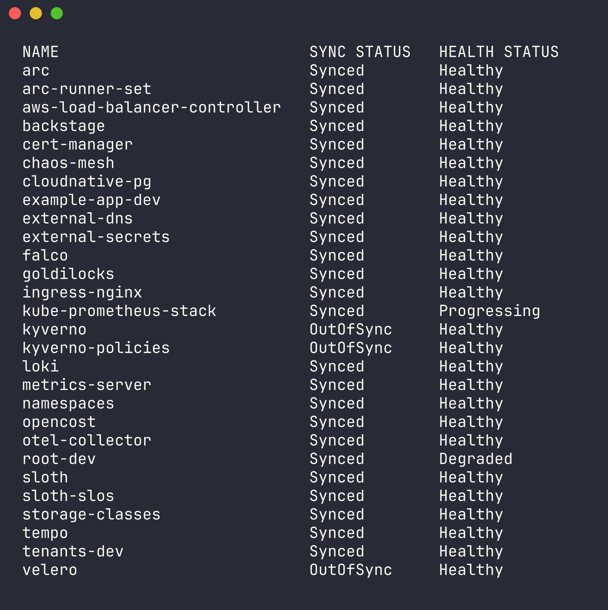
The next loop is portfolio screenshot capture — the rebuild runbook is now known-good and reproducible at about 35 minutes and 50 cents per cycle. After that I revisit ArgoCD self-management with the pinning convention above, then start carving into Phase 2’s reliability work properly: chaos experiments wired into Pyrra SLO budgets, Velero restore drills, OpenCost-driven rightsizing PRs.
The lab is doing what it was built to do. It runs. It tears down clean. The bugs we hit are the ones a real platform team hits. The narrative above is the value. The cluster running underneath is just the venue.
07Session 5 — the cold bring-up that broke 12 things
A week after Session 3 declared Phase 1 “applied and stable,” the cluster came down, sat dormant for a few days, and got brought back up from terraform apply on main. Session 4 ran a short closeout. Then Session 5 hit a fresh terraform apply and discovered that “stable” had been doing a lot of heavy lifting — at least twelve distinct bugs were lurking that only surfaced on a cold bring-up. None of them had appeared on the warm cluster Session 3 signed off on.
The pattern across all of them: the apply succeeded, ArgoCD reported most apps as Synced / Healthy, and the underlying resources were either missing, half-deployed, or quietly wrong. The cluster looked green in the UI and the cluster was not green. Every bug below was caught by ignoring the ArgoCD app-health column and reading the actual workload state instead.
7.1 — The gp3 StorageClass nobody created (again)
kube-prometheus-stack came up Synced / Degraded. The Grafana pod was Pending for two hours.
Warning FailedScheduling pod has unbound immediate PersistentVolumeClaims
ProvisioningFailed storageclass.storage.k8s.io "gp3" not foundFive different charts (prometheus, alertmanager, grafana, loki, tempo) reference storageClassName: gp3 in their values, and the only StorageClass that exists on a fresh EKS cluster is gp2. The EBS CSI driver addon does not ship a gp3 SC. Nobody had added one. Last session’s cluster had gp3 because someone had kubectl apply’d it manually at some point and the SC survived destroy/rebuild only because… well, it didn’t. It was just absent from the start this time, and the warm cluster from Session 3 had been carrying it from a forgotten manual kubectl create.
Fix: a 12-line StorageClass manifest under kubernetes/base/storage-classes/ and a one-off ArgoCD Application at sync-wave -10 so it lands before any chart that wants a PVC. With the SC present, the Prometheus operator’s reconcile loop creates the StatefulSet within a minute. Grafana’s PVC binds.
7.2 — The Prometheus operator says exactly what’s wrong
Once Grafana recovered, Prometheus and Alertmanager still did not start. The Prometheus CR had been sitting at RECONCILED=False for two hours. The reconcile error was right there in status.conditions:
message: storage class "gp3" does not exist
reason: ReconciliationFailedSame root cause, second-order effect. The lesson is that kubectl get prometheus,alertmanager -o yaml and reading the status conditions is faster than reading prometheus-operator pod logs — the operator surfaces the exact reconciliation failure in the CR status. We had been grepping operator logs and ignoring the CR.
7.3 — Alertmanager config schema drift
With the SC in place, Alertmanager still did not start. Different error:
provision alertmanager configuration: failed to initialize from secret:
yaml: unmarshal errors:
line 29: field api_url_secret not found in type config.plain
line 39: field routing_key_secret not found in type config.plainapi_url_secret and routing_key_secret are valid fields — in the prometheus-operator AlertmanagerConfig CRD. They are not valid in raw Alertmanager v0.27 config, which only knows about api_url / api_url_file and routing_key / routing_key_file. Someone (probably the original author of the values file) had cross-pollinated the two schemas. The cluster had been accepting it because the Secret holding the config got generated but Alertmanager never tried to parse it on the prior run.
The portfolio-grade fix is alertmanagerSpec.secrets[] mounting an ExternalSecret-backed Secret with *_file references. The lab fix is inline placeholder URLs with a comment documenting how production would wire it. The routing topology is what’s interesting in the demo; the actual webhook delivery does not need to fire.
7.4 — The Loki chart that won’t render
ArgoCD reported loki as Unknown / Healthy. Translation: it had never successfully rendered the Helm chart, so it had no opinion on whether it was in sync. Pull the actual comparisonError:
helm template loki grafana/loki -f values-dev.yaml ...
Error: execution error at (loki/templates/single-binary/statefulset.yaml:44:28):
Please define loki.storage.bucketNames.chunksTwo structural problems in one values file:
loki.storage.s3.bucketNamesshould beloki.storage.bucketNames. The S3-specificregionbelongs unders3., butbucketNameslives at the parent level. The chart added that constraint somewhere between the version this repo was originally pinned to and the v6 series that’s current.- The chart now ships
read.replicas,write.replicas,backend.replicasnon-zero by default. Combined withdeploymentMode: SingleBinaryand asingleBinary.replicas: 1block, the chart’s own validator refuses to render — both modes are active simultaneously.
Fix: move bucketNames up one level, explicitly zero the SSD-target replicas, disable gateway + chunksCache + resultsCache (overkill for a dev SingleBinary). Then it renders 12 resources and the Loki pod starts.
7.5 — otel-collector chart 0.97 quietly removed the default image
Same Unknown / Healthy ghost as Loki. Different error:
Error: 'image.repository' must be set.
See https://github.com/open-telemetry/opentelemetry-helm-charts/blob/main/charts/opentelemetry-collector/UPGRADING.mdThe OpenTelemetry Collector Helm chart 0.97+ deliberately removed the default image — you have to commit to either otel/opentelemetry-collector (core) or otel/opentelemetry-collector-contrib (more processors, what we want for tail-sampling and k8sattributes). The values file in this repo predates 0.97 and never set it.
One-line fix. The class of bug is chart upgrade silently removes a default. We have no tooling that catches this; the chart targetRevision is 0.* which floats. Follow-up: either pin minor versions in the AppSet template or add a CI step that does helm template against every chart in the repo and fails on stderr.
7.6 — ArgoCD lies about app health when it can’t render
This is the meta-lesson from 7.4 and 7.5. kubectl get applications reported loki Unknown / Healthy and otel-collector Unknown / Healthy — two apps that don’t exist in the cluster, no namespace, no pods. Healthy by what definition?
ArgoCD’s health computation is lazy. If the app has never successfully diff’d desired against live state, it has nothing to be unhealthy about. The Unknown sync status is the truthful signal; the Healthy next to it is misleading framing. A health column reading Unknown / Healthy for an hour means “we never got far enough to find out it’s broken.” Treat Unknown as a hard failure in any operations dashboard; the green-looking pair is a phantom.
I had been scanning the app list for red rows. I should have been scanning for grey rows.
7.7 — example-app is not in GitOps
An embarrassing find. The example application — the whole point of having a demo workload — was kubectl apply’d manually in Session 4 and never wired into the GitOps tree. The Application file existed at gitops/applications/tenants/example-app/dev.yaml but nothing referenced it. The root AppSet only walks gitops/appsets/, and that directory had no tenant entry.
So on every fresh bring-up since Session 4, the cluster came up with zero workloads despite a pel/example-app image sitting in ECR and a chart sitting in examples/microservice-demo/chart/.
Fix: add gitops/applications/tenants/kustomization.yaml listing tenant Applications, and gitops/appsets/tenants-dev-app.yaml as a thin Application that synchronously applies that kustomization at sync wave 19. Now tenants come up on every fresh bring-up without manual intervention. The pattern scales to additional tenants by adding files to gitops/applications/tenants/<tenant>/.
7.8 — The phantom {{name}} Application
ArgoCD’s sync log showed the security AppSet generating a real-looking template error:
Application.argoproj.io "{{name}}" is invalid: metadata.name: Invalid value: "{{name}}"The {{name}} was literal, not substituted. The security ApplicationSet uses a git file generator that walks gitops/applications/security/*.yaml, treating each file as a parameter map ({name, repoURL, chart, valuesFile, syncWave}) and substituting those values into the AppSet template. One file in that directory — kyverno-policies-app.yaml — was a full Application manifest, not a parameter map. The generator parsed it, found no top-level name field, and rendered {{name}} literally. The resulting Application had a name of {{name}}, which Kubernetes correctly rejected.
The error didn’t stop the AppSet from generating the other applications correctly, so the security stack came up healthy. It just emitted a phantom failed Application into root-dev’s sync status, contributing to the Degraded cascade.
Fix: move the standalone Application to gitops/appsets/ where standalone Applications live. The mistake is structural: any directory walked by a parameterized AppSet generator should contain only parameter files. Mixing two file formats invites exactly this confusion.
7.9 — Pyrra Helm repo is dead
gitops/applications/observability/pyrra.yaml pointed at https://pyrra-dev.github.io/pyrra for the Helm chart. That URL returns 404. The project on GitHub is alive — v0.10.0 released two weeks ago — but the published chart repo is gone.
Sprint 11’s spec was originally written as “Pyrra/Sloth” with Sloth as the documented alternative. So we switched. Sloth’s chart repo (slok-dev.github.io/sloth-helm-charts) is also 404, but Sloth ships raw Kubernetes manifests at a stable path in the project repo (deploy/kubernetes/raw/sloth.yaml). I vendored v0.16.0’s manifests plus the PrometheusServiceLevel CRD into observability/sloth/operator/, patched the hard-coded monitoring namespace to observability, and rewrote the two SLO definitions for Sloth’s CR shape (one PrometheusServiceLevel with multiple SLOs in spec.slos[] instead of one CR per SLO).
A latent bug fell out of the migration: the original Pyrra SLOs referenced http_requests_total and http_request_duration_seconds_*, but the example-app emits example_app_http_requests_total and example_app_http_request_duration_seconds_* — the prefix never lined up, so the SLOs would have matched zero series. They never ran in production so we never noticed. Sloth migration fixes the metric names while we’re in there.
7.10 — The pod-density ceiling
Around the time I thought we were done, we hit a fresh class of failure: pods stuck Pending not for resources, not for affinity, but for Too many pods:
0/2 nodes are available: 2 Too many pods.kubectl get nodes -o jsonpath='{...allocatable.pods}' returns 29. Two m6i.large nodes × 29 = 58 max pods. The cluster was running 56. Two slots left. Velero’s Helm pre-install hook needed one. The Chaos Mesh chaos-daemon DaemonSet needed one per node. Anything else — ARC runner ephemeral pods, the next Helm hook, any future workload — would be Pending forever.
The CNI’s per-node max-pods is computed from per-IP-on-ENI math: m6i.large has 3 ENIs × 9 secondary IPs each ≈ 29 pods. The standard fix is to enable VPC CNI prefix delegation, which makes the CNI carve out /28 prefixes from the VPC and serve 16 pod IPs per prefix instead of one. m6i.large jumps to around 110 pods.
Fix: add configuration_values = jsonencode({env = {ENABLE_PREFIX_DELEGATION = "true", WARM_PREFIX_TARGET = "1"}}) to the aws_eks_addon.vpc_cni resource. On a fresh apply this is invisible — new nodes come up with the higher limit at first boot. On an upgrade against an existing cluster the kubelet’s max-pods is locked at startup, so existing nodes have to be cycled before they pick up the new limit. The runbook now documents both paths.
Side lesson: Velero’s “Missing” status had been blamed on a Kyverno admission webhook flake in earlier diagnoses. That was wrong. The Helm hook pod never got scheduled — its 48-second failure window was the Job exhausting backoffLimit: 3 after three back-to-back FailedScheduling events. I had been chasing webhooks; the answer was capacity.
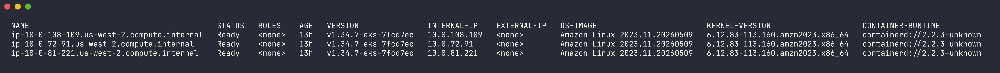
7.11 — Conftest’s package-collision footgun
Sprint 18’s six Rego policies and four test files were all declared package main. Three of them — disallow-default-namespace, disallow-host-namespaces, require-cost-labels — each defined a top-level workload_kinds := {...} set constant with different memberships. In OPA, complete rules with the same name in the same package across files merge into a single rule. With three different definitions producing three different sets, that rule produced multiple outputs and the entire policy bundle refused to compile:
Error: cicd/conftest/policies/require-cost-labels.rego:15:
eval_conflict_error: complete rules must not produce multiple outputsconftest verify had been failing in CI for a while and nobody had noticed because the CI workflow exit code was being swallowed somewhere — the policies were being applied to manifests, but the unit tests themselves never ran.
Fix: refactor each policy into its own subpackage (policies.disallow_default_namespace, policies.require_cost_labels, etc.). Tests reference their own package’s deny rule, so each test sees only the denials from its own policy. After the refactor, 15 tests, 15 passed. Running the bundle against a deliberately broken Deployment correctly emits 10 distinct violations from 6 policies. Running it against the rendered example-app chart catches two real findings — the chart uses :latest and doesn’t set runAsNonRoot on the container. Both are real bugs the conftest gate exists to catch; both are now ticketed.
7.12 — The label key Kubernetes will not let you create
While wiring up the missing dev-apps namespace, the apply failed with:
Namespace "dev-apps" is invalid: metadata.labels: Invalid value: "pel:managed-by":
name part must consist of alphanumeric characters, '-', '_' or '.'The kubernetes/base/namespaces/namespaces.yaml file declared labels like pel:managed-by: kustomize and pel:env: dev. The : character is not legal in a Kubernetes label key — the rule is [prefix/]name where prefix is a DNS subdomain (separated by /, not :) and name is 63 chars of alphanumeric plus -, _, ..
So pel:managed-by is malformed. The fix is pel.io/managed-by — pel.io is the prefix, managed-by is the name. The file had been authored by someone who’d seen pod-security.kubernetes.io/enforce in the same file and mentally substituted : for / somewhere along the way. The CI lint chain (yamllint + kubeconform) didn’t catch it because kubeconform validates structure against the Kubernetes API schema, and the schema for label keys is checked at admission time, not in the OpenAPI spec.
7.13 — Prefix delegation, the second-order fix, and the AMI that wouldn’t listen
Fixing the pod-density ceiling from 7.10 turned out to need two changes, not one. The first was obvious: enable ENABLE_PREFIX_DELEGATION=true in the VPC CNI addon configuration via Terraform. terraform plan showed 0 to add, 1 to change, 0 to destroy — a clean in-place update of the addon. Applied it. kubectl describe ds aws-node -n kube-system confirmed the env var was now set. The CNI was, as advertised, allocating /28 prefixes from the VPC.
Then I cycled the nodes. The first hint of trouble was the AWS update-nodegroup-version --force returning Successful in five seconds — too fast to have actually replaced anything. AWS’s --force doesn’t force-replace if the AMI version hasn’t changed; it just no-ops with a green status. The real path is aws autoscaling start-instance-refresh against the underlying ASG, which is what an EKS managed nodegroup actually proxies to. (Second gotcha along the way: aws eks list-nodegroups --query 'nodegroups[0]' returns the first alphabetically, which in this account is pel-ng-burstable-dev — the SPOT pool with zero running instances. The real nodes live in pel-ng-general-dev. Always name the nodegroup explicitly.)
Triggered the right refresh. New nodes came up clean. Old nodes drained and terminated. Cluster looked healthy. Ran the verifier:
kubectl get nodes -o jsonpath='{range .items[*]}{.metadata.name} max-pods={.status.allocatable.pods}{"\n"}{end}'
ip-10-0-92-194 max-pods=29
ip-10-0-99-38 max-pods=29Still 29. Both nodes were brand new, built by an instance refresh that ran after the CNI was using prefix delegation. They should have been 110. They weren’t.
The diagnosis took a kubectl get --raw /api/v1/nodes/<node>/proxy/configz against the new node:
maxPods: 29 mode: NoneThe kubelet’s --max-pods had been explicitly set to 29 at boot by the AL2023 bootstrap script (nodeadm). The bootstrap script computes max-pods from per-IP-on-ENI math at the moment of boot — three ENIs × nine secondary IPs ≈ 27, plus a couple of reserved slots = 29 — and writes that into the kubelet’s startup config. It does not read the CNI’s runtime configuration. So even with the CNI now allocating prefixes and capable of serving 110 IPs per node, the kubelet itself refuses to admit more than 29 pods.
The fix is a launch-template override. EKS managed nodegroups accept a custom user_data field that they merge with their own bootstrap. The format expected by nodeadm on AL2023 is MIME-multipart with an application/node.eks.aws part containing a YAML NodeConfig:
MIME-Version: 1.0
Content-Type: multipart/mixed; boundary="//"
--//
Content-Type: application/node.eks.aws
apiVersion: node.eks.aws/v1alpha1
kind: NodeConfig
spec:
kubelet:
config:
maxPods: 110
--//--base64-encoded and stuffed into aws_launch_template.user_data. The Terraform change is six lines plus a locals block; terraform plan reports 0 to add, 4 to change, 0 to destroy (two launch templates plus the two nodegroups that get bumped to the new template versions). One more start-instance-refresh and the new nodes report max-pods=110.
The portable lesson: enabling prefix delegation is a two-step operation, not one. The CNI addon change tells the network plumbing it can serve more IPs. The launch-template user_data tells the kubelet it can accept more pods. Skip the second step and you get a cluster that could run dense workloads but won’t.
7.14 — Kyverno held its own webhook hostage during a node drain
The instance refresh in 7.13 didn’t just leave us at 29 max-pods. It also briefly bricked the cluster.
About four minutes into the rolling replacement, with one old node draining and one new node booting, every pod creation in the cluster started failing:
Internal error occurred: failed calling webhook "validate.kyverno.svc-fail":
failed to call webhook: Post "https://kyverno-svc.kyverno.svc:443/validate/fail?timeout=10s":
no endpoints available for service "kyverno-svc"The error appeared on aws-node (the CNI), aws-load-balancer-controller, ebs-csi-controller, external-secrets, metrics-server, kube-state-metrics — and on Kyverno’s own admission controller ReplicaSet trying to create the replacement pod for the one we’d just evicted. The new nodes couldn’t get a CNI pod, so they couldn’t transition to Ready. Kyverno couldn’t reschedule itself onto an unready node. Nothing could recover.
The chain:
- Kyverno’s admission webhook (
validate.kyverno.svc-fail) hasfailurePolicy: Failand routes through Servicekyverno-svc. - Service endpoints come from running pods matching the selector.
- The only Kyverno admission pod was on the old draining node, evicted by the drain.
- Service
kyverno-svcnow had zero endpoints. - Every CREATE on the apiserver consults all ValidatingWebhookConfigurations; the kyverno webhook fails to connect;
failurePolicy: Failsays deny the request. - Kyverno’s own ReplicaSet controller can’t create a replacement Kyverno pod because the new pod would itself need admission.
aws-nodeDaemonSet can’t create pods on new nodes for the same reason — new nodes stayNotReady.- Cluster is wedged. No new pods anywhere. No path to recovery without operator intervention.
The textbook recovery is to delete the offending ValidatingWebhookConfiguration so admission stops calling the dead Service.
kubectl delete validatingwebhookconfiguration kyverno-resource-validating-webhook-cfgWithin ten seconds, pod creation succeeded again. aws-node came up on the new nodes; they went Ready; Kyverno’s admission controller reached 1/1 Running; Kyverno reinstalled its own webhook configurations from its policies. The cluster recovered.
The root-cause framing matters more than the recovery procedure. The proximate cause is the admission-deadlock pattern: a single-replica admission controller whose webhook has failurePolicy: Fail cannot survive its own pod being evicted. The pattern is well-known — Kyverno’s install docs warn against it, cert-manager’s docs warn against it, Google calls it out in Anthos docs. The standard mitigation is multiple replicas plus podAntiAffinity across nodes, so at least one replica always remains Ready during a node drain.
We had this lab running single-replica Kyverno on purpose. Why? Because the cluster only had 58 total pod slots (29 per node × 2 nodes). With Phase 1 + half of Phase 2 deployed, we were running 56 pods. There was no room for HA replicas of anything — Kyverno, External Secrets, AWS Load Balancer Controller, all of them were single-replica deployments because that was the only thing that fit. The pod-density ceiling didn’t just block velero. It forced every admission controller into a configuration that was a single-node-failure away from cluster-wide outage.
So the fix order is not “delete the webhook config” — that’s the recovery, not the fix. The fix is:
- Raise pod capacity (7.10 + 7.13).
- Once there’s headroom, bump every admission-controller-with-
failurePolicy=Failto multiple replicas withpodAntiAffinityspreading them across nodes — Kyverno admission first because it’s the most violent failure mode, then ESO, then anything else that wraps a webhook.
For Kyverno specifically, the chart values look like:
admissionController:
replicas: 3
podAntiAffinity:
preferredDuringSchedulingIgnoredDuringExecution:
- weight: 100
podAffinityTerm:
topologyKey: kubernetes.io/hostname
labelSelector:
matchLabels:
app.kubernetes.io/component: admission-controllerThat’s a follow-up commit, queued behind the prefix-delegation rollout in the runbook.
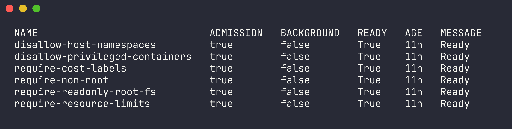
failurePolicy: Fail turned a routine node refresh into a cluster-wide outage.The other lesson is procedural. Cycling all nodes in an EKS managed nodegroup with single-replica critical workloads is functionally equivalent to taking the cluster down. The right operational pattern, even after we have multiple Kyverno replicas, is a staggered refresh with MinHealthyPercentage: 67% and longer warmup windows, so admission controllers always have a Ready endpoint during the transition. The instance refresh I ran here used MinHealthyPercentage: 50 — at single-replica density, that meant the Kyverno pod was eligible for eviction before any replacement was Ready, and the chain in steps 1–8 above followed deterministically.
The pattern across all fourteen
A few common shapes are worth naming, because they will repeat:
- Warm-cluster bugs that only fire cold. Anything that depends on a manually-applied resource (gp3 SC,
dev-appsnamespace), a stateful Secret being parsed for the first time (Alertmanager config), or a Helm hook reaching backoff (velero CRDs) is invisible to a running cluster. They surface on a freshterraform apply. The only defense is to do clean rebuilds regularly — at least once a week — and treat every fresh bring-up as a regression test. Synced / Healthyis a lie when the underlying status isUnknown. ArgoCD’s two-column status is not a single signal. A flatUnknownsync status means the app never compared desired-to-live state. Read that as red, not green.- Helm chart values drift faster than the values files in the repo. Five of the fourteen bugs are chart upgrades silently breaking a values file (
bucketNamespath, SSD replicas non-zero, image required, AlertmanagerConfig schema mix-up). The fix is to either pin chart minor versions or to add a CI step that doeshelm templateagainst every chart on every PR. - Read the operator’s
status.conditions, not the operator’s logs. Prometheus operator, Alertmanager operator, ArgoCD, Velero — every one of them surfaces the exact reconciliation error in the CRstatus.conditions. The pod logs are usually a paragraph of timing chatter wrapping a one-line root cause. The CR status is the root cause without the chatter. - Configuration is layered; one fix is rarely enough. Prefix delegation needed the CNI addon update and the kubelet user_data. Velero needed the IRSA wiring and the bucket and the prefix-delegation-driven pod capacity. The first change makes the system capable of the new behavior; subsequent changes make it exhibit it. Always ask: what’s the first system that has to learn about this change, and then what’s the next one downstream that has to be told too?
- Single-replica admission controllers with
failurePolicy: Failare a self-deadlock waiting to happen. 7.14’s chain repeats on any node drain, planned or unplanned, of the node hosting the single admission pod. The mitigation is HA replicas withpodAntiAffinityacross nodes. The trap is that HA replicas need pod headroom, which the same cluster usually doesn’t have if it’s small enough to be running single-replica admission in the first place — a configuration that ships fragile by default.
I pushed nine commits across the session: gp3 + Sloth migration, observability config fixes, kyverno-policies move, conftest package refactor, namespace label fix, two prefix-delegation Terraform changes (addon + nodeadm user_data), and the session-5 portfolio docs. The cluster is currently mid-recovery from the node cycle — Kyverno is back, new nodes are Ready, and the second terraform apply + final instance refresh will bring max-pods to 110. The lab still tears down clean. The bugs we hit are still the ones a real platform team hits. The list got longer; the patterns underneath it are the same.
08The strategy that fell out of it
The fourteen bugs in Session 5 weren’t independent. Underneath them ran a single thread: the cluster was structurally too small for what we were trying to do. Two m6i.large nodes at 29 pods each gives 58 slots. Phase 1 baseline alone (DaemonSets, system pods, controllers, ArgoCD, observability) eats ~55–60. Phase 2 adds chaos-mesh, Falco, Sloth, an example app — and now you’re trying to bin-pack with zero headroom into a layout that has no slack for a node to fail, an admission controller to be unhealthy, or a Helm hook to start a CRD upgrade Job.
Every one of the bugs above is what that looks like in practice. The Kyverno self-deadlock (7.14) needs a second Kyverno replica on a different node — but the cluster doesn’t have the slots to run a second replica. The Velero CRD upgrade hook (7.10) needs one transient pod — but every Pending state we hit during the session was the same shape: there’s no room for one more pod. The prefix-delegation work (7.13) is the right fix, but it only buys breathing room at the same node count; it doesn’t change the shape of the cluster.
So after the session closed, the next thing I wrote wasn’t more code. It was a strategy doc: _project-docs/architecture/02-node-capacity-strategy.md. The summary is short:
- 3×
m6i.xlarge, not 2×m6i.large. Same dollars-per-pod-slot (110 → 234 max-pods at exactly 2× the price), but four vCPU per node instead of two — which means Prometheus, Loki, and Tempo finally have CPU headroom for spiky reconciles. Spread across three AZs, the cluster survives losing any one of them. - Three layers of capacity, not one. A static baseline (always on, multi-AZ) for platform addons. A workload pool for tenant apps. A burstable pool on SPOT for chaos, ARC runners, batch — tainted so only opt-in pods land there. Phase 1 ships these as managed nodegroups; Phase 2 replaces them with Karpenter NodePools.
- PDB hygiene as a first-class rule. Every multi-replica platform Deployment gets
maxUnavailable: 1(neverminAvailable: 100%which deadlocks the moment one replica is unhealthy), plustopologySpreadConstraintsto keep replicas on different nodes. Theebs-csi-controllerdrain failure we hit at the tail of session 5 — where a self-perpetuating crash loop setcurrentHealthy=0againstexpected=2, so the PDB refused every eviction and the node refresh rolled back — is the case this rule prevents. - Drain-test as a gate. Before any apply that touches launch templates, AMI versions, or node sizes:
kubectl drain <node> --ignore-daemonsets --dry-run=serveron the most-loaded node. If it errors, the PDB layout is wrong, not the node config. This is the missing safeguard. - Karpenter promotion in Phase 2, not Phase 1. Karpenter would solve a lot of this, but it adds a dependency to bootstrap. Managed nodegroups are predictable for demos and easier to reason about during Phase 1 stabilization. Promote at Sprint 14, after the static baseline is solid.
- Cost envelope: ~$275/month always-on dev, or $30–60/month with disciplined teardown. About $9/day more than the broken sizing. For the headroom we get — and for not running into the same set of bugs the next time we cold-start — that’s a trivial premium.
The acceptance gate for the new strategy is simple and falsifiable: force-terminate any node with aws ec2 terminate-instances and the cluster stays fully functional within five minutes. If that doesn’t pass, the sizing is still wrong, or the PDB layout still has a deadlock waiting to fire, and I’ll find out before a real incident does.
It’s a small redesign on paper. In practice it’s the difference between a lab that demonstrates the practice (“we ran fourteen bugs to ground in one session”) and a lab that demonstrates the operating posture (“the next fourteen bugs don’t break the cluster while we’re fixing them”). The strategy doc is the bridge.
After this commit, the cluster gets torn down and rebuilt against the new sizing. Sprint 10 (Tempo on S3) stays paused at the implementation gate from the start of the session — but this time it’ll come up on a cluster that has room for it. The bugs we found weren’t a setback; they were the cluster telling us what it actually needed.
09Session 6 — the destroy that wouldn’t
After the strategy doc landed, the plan was simple: tear the cluster down, edit the Terraform module to the new sizing, apply fresh. terraform destroy -auto-approve, wait fifteen minutes, move on.
Three runs and four manual unblocks later, the cluster was finally gone. Each unblock surfaces a different way a cluster can be harder to remove than it was to create — patterns worth naming because they’ll repeat on every teardown, planned or unplanned.
The destroy ran in two passes. The first errored partway through; the second succeeded after manual cleanup of four orphan-resource classes. The pattern across all four is the same: Kubernetes controllers create AWS resources that Terraform doesn’t track, and when the cluster goes away those resources are left holding the VPC. Terraform deletes everything it created, dutifully — but TF state has no record of the load balancers, the security groups, the ENIs, or the webhook registrations created by in-cluster controllers reconciling Service / Ingress / Kyverno-policy CRs. So at destroy time, TF tries to delete the VPC, AWS says “you still have dependencies in this VPC,” and TF gives up.
Here’s the order they surfaced, with the recovery for each.
9.1 — Kyverno’s failurePolicy: Fail webhooks survive Kyverno itself
The destroy started by ripping the worker nodes out. Every workload pod went down, including Kyverno. But the ten Kyverno ValidatingWebhookConfiguration and MutatingWebhookConfiguration resources stayed registered, because they’re cluster-scoped CRs that aren’t tied to the Kyverno Deployment’s lifecycle. Each of them has failurePolicy: Fail — meaning any API call the webhook would have validated must succeed in calling the webhook, or the call is rejected.
The next thing Terraform tried to do was delete the EKS managed addons (coredns, eks-pod-identity-agent, aws-ebs-csi-driver). The EKS API tried to delete those resources, the API server tried to call the Kyverno webhook to validate the delete, and Kyverno’s Service had zero healthy endpoints. So the deletes failed with:
AdmissionRequestDenied: failed calling webhook "validate.kyverno.svc-fail":
no endpoints available for service "kyverno-svc"EKS retried, gave up, marked the addons DELETE_FAILED. Terraform aborted. The cluster was left in ACTIVE state with three addons stuck and the rest of the destroy never having even started — an orphaned EKS control plane accruing $0.10/hr forever, with no obvious path forward in the TF apply log.
This is the same root cause as the Session 5 Kyverno self-deadlock during node cycling (7.14), but the blast radius is bigger. There, the cluster was healthy but reconciliation stalled until you got a Kyverno pod back. Here, the cluster can’t be destroyed until someone with kubectl access manually drops the webhook configs. If the kubeconfig was lost or the operator moved on, the cluster keeps billing indefinitely.
# Recovery — drop every Kyverno webhook config; the control plane is still
# up (EKS never got to delete it), so kubectl still works.
kubectl get validatingwebhookconfigurations -o name | grep kyverno | xargs -r kubectl delete
kubectl get mutatingwebhookconfigurations -o name | grep kyverno | xargs -r kubectl deleteAfter that, addon deletes complete in seconds and the destroy moves on.
The permanent fix is to add a Helm pre-delete hook to the Kyverno release (or a separate small ArgoCD app that owns the webhook configs and has a sync wave that runs before Kyverno is uninstalled), so the webhooks are gone before Kyverno’s pods get evicted. Filed in the next-session plan.
9.2 — Versioned S3 buckets refuse to delete
The Loki object store (pel-loki-) is a versioned S3 bucket — correctly so, because object versioning is a durability requirement for log archives and the bucket has a lifecycle prevent_destroy expectation upstream. But the Terraform resource for the bucket wasn’t configured with force_destroy = true, which meant that when destroy got to that bucket, AWS refused:
BucketNotEmpty: The bucket you tried to delete is not empty.
You must delete all versions in the bucket.The bucket had 22 object versions and 9 delete markers. Small. But AWS doesn’t care about size — it cares that DeleteBucket requires every version and every delete marker to be gone first. aws s3 rm --recursive doesn’t work on a versioned bucket; it only deletes current versions, and it adds a new delete marker for each, which itself counts as an object preventing bucket deletion. You have to use s3api delete-objects with explicit VersionIds.
BUCKET=pel-loki--dev
aws s3api list-object-versions --bucket $BUCKET \
--query '{Objects: Versions[].{Key:Key,VersionId:VersionId}}' > /tmp/v.json
aws s3api list-object-versions --bucket $BUCKET \
--query '{Objects: DeleteMarkers[].{Key:Key,VersionId:VersionId}}' > /tmp/m.json
aws s3api delete-objects --bucket $BUCKET --delete file:///tmp/v.json
aws s3api delete-objects --bucket $BUCKET --delete file:///tmp/m.json The permanent fix is force_destroy = true on every versioned bucket in the codebase. It only affects terraform destroy; it doesn’t weaken in-cluster bucket protections. Same fix needed on pel-velero-*, pel-falco-audit-*, and the future pel-tempo-* bucket from Sprint 10. Audit + patch goes in next-session work.
9.3 — Orphan ELB / NLB hold ENIs in public subnets
This one’s not strictly a “bug” — it’s known behavior of the AWS Load Balancer Controller and cloud-controller-manager — but it deserves writing up because nothing in the destroy log warns you.
When you create a Kubernetes Service of type=LoadBalancer, the in-cluster cloud-controller-manager creates a Classic ELB and points its target groups at the worker nodes. When you create an Ingress with the AWS LBC ingress class, the LBC creates an NLB (or ALB) the same way. Both LBs are AWS resources, not Kubernetes resources, and they’re created by reconciling K8s objects — so Terraform has no record of them.
At destroy time, the worker nodes go away first (managed nodegroup delete). The Service and Ingress objects are technically still in etcd, but there’s nothing to reconcile them, and even if there were, the controllers themselves are gone with the workers. So the two load balancers in this cluster — a Classic ELB and pel-nlb-dev — were left running, each with three ENIs attached, one per AZ, in the three public subnets.
Terraform then tried to delete the three public subnets. AWS refused: each subnet had a load balancer ENI in it. TF retried. AWS kept refusing. After 12 minutes of Still destroying... polling logs I went looking and found the orphans:
# What's in those subnets
aws ec2 describe-network-interfaces \
--filters Name=subnet-id,Values=subnet-0167f0a97fa72bcb2 \
--query 'NetworkInterfaces[*].{id:NetworkInterfaceId,desc:Description,status:Status}'The descriptions tell you exactly what they are: ELB a0e087... (classic) and ELB net/pel-nlb-dev/... (v2). Delete the load balancers, the ENIs detach within 30 seconds, and TF’s next subnet-delete poll succeeds.
aws elbv2 delete-load-balancer --load-balancer-arn arn:aws:elasticloadbalancing:us-west-2:<acct>:loadbalancer/net/pel-nlb-dev/<id>
aws elb delete-load-balancer --load-balancer-name <classic-elb-name>The permanent fix is to teach the destroy runbook to delete all in-cluster Service type=LoadBalancer and Ingress resources before terraform destroy runs. If both kubectl and AWS LBC are still healthy when the deletes go through, the controllers will clean up their AWS resources properly. The teardown sequence becomes: kubectl delete ingress,service --all -A (let controllers reconcile, ~60s), then terraform destroy.
9.4 — Orphan security groups hold the VPC
After the subnets finally drained, TF moved on to deleting the VPC itself — and got stuck again. Three minutes of aws_vpc.this: Still destroying... later, I looked at the VPC and found four security groups still attached, three of which TF didn’t create:
sg-01d748d14e32f30b8 k8s-traffic-peleksdev-2e9b0782d1
sg-06e0af6b52f5a8a0e k8s-platform-ingressn-43f8392ad5
sg-0b57bc86dfe38cbcc k8s-elb-a0e087816822a4a9ba63305a842144e6
sg-02eef6f8745899c1f defaultThe pattern is the same as 9.3: in-cluster controllers create these SGs as side effects of creating LBs and reconciling traffic routing. The AWS LBC creates k8s-traffic-* for cluster-wide traffic policies. The cloud-controller-manager creates k8s-elb-* for each ELB it provisions. The ingress controller creates k8s-platform-ingressn-* for ingress NLBs. Terraform never sees these create events, so it has no destroy event to fire. AWS won’t let you delete a VPC while non-default SGs reference it.
# Recovery — delete the three orphan k8s SGs by hand
for sg in sg-0b57bc86dfe38cbcc sg-06e0af6b52f5a8a0e sg-01d748d14e32f30b8; do
aws ec2 delete-security-group --group-id $sg
doneThe default SG goes with the VPC; you can’t delete it directly and you don’t need to. Once the other three are gone, TF’s next VPC-delete poll succeeds.
The permanent fix overlaps with 9.3: deleting the in-cluster Service/Ingress resources first lets the controllers clean up their SGs as part of reconciliation. The LBs and SGs are siblings — kill the LB cleanly, the SG goes with it.
Pattern: TF state ≠ AWS state, and destroy exposes the gap
The thread connecting 9.1–9.4 is that the cluster’s lifetime created AWS resources outside Terraform’s view, and at destroy time TF can’t unwind what it didn’t put there:
- 9.1: Kyverno’s webhook registrations are CRs that survive the Deployment that backs them.
- 9.2: Versioned bucket objects accumulate during cluster lifetime; TF never had visibility into them.
- 9.3: In-cluster controllers create AWS LBs as a side effect of K8s objects.
- 9.4: Same controllers create supporting SGs as a side effect of the LBs.
The generalized rule is worth naming: for any cluster with controllers that create AWS resources from Kubernetes objects (which is to say, any non-trivial cluster), destroy is a two-stage operation. First clean up in-cluster resources whose reconciliation produces AWS state. Only then run terraform destroy. A safer destroy sequence:
# Stage 1 — cluster-side cleanup (controllers still healthy, can self-clean)
kubectl delete ingress,service --all -A # AWS LBC + cloud-controller clean up LBs + SGs
kubectl get validatingwebhookconfigurations -o name | grep kyverno | xargs -r kubectl delete
kubectl get mutatingwebhookconfigurations -o name | grep kyverno | xargs -r kubectl delete
# Stage 2 — empty versioned S3 buckets that TF can't force-delete (or fix force_destroy upstream)
for bucket in pel-loki-* pel-velero-* pel-falco-audit-*; do
# ... empty versions + delete markers
done
# Stage 3 — actual terraform destroy
terraform destroy -auto-approveBetter still is to fix the TF source so destroy works without stage 1 and 2:
force_destroy = trueon every versioned bucket (cheap, one-line).- A Kyverno webhook-config pre-delete hook (Helm hook or ArgoCD sync-wave).
- An LB cleanup hook that runs
kubectl delete ingress,service --allas a pre-destroynull_resource.
Until those land, the runbook in _project-docs/sessions/BRING-UP-RUNBOOK.md grows a “Teardown” section that documents the manual unblock commands in the right order. Same recipe every time — the kind of operational knowledge a real platform team writes down once and reads back at 3 AM.
The cluster did finally go: Destroy complete! Resources: 34 destroyed. Total elapsed for the destroy (across the two TF runs and four manual interventions): about 45 minutes. Roughly 35 minutes of that was AWS waiting on its own resource teardown timers; the four interventions themselves took maybe 90 seconds. Most of the cost wasn’t compute — it was the time to figure out which of the “Still destroying...” messages were normal and which were a quiet error condition waiting to surface as the next Error:.
10Visual evidence
Selected captures pulled from the actual cluster — the AWS consoles that mirror the Terraform we wrote, the dashboards we read while debugging, and the OpenCost UI that makes the spend visible.
AWS console — what Terraform built
pel-vpc-dev.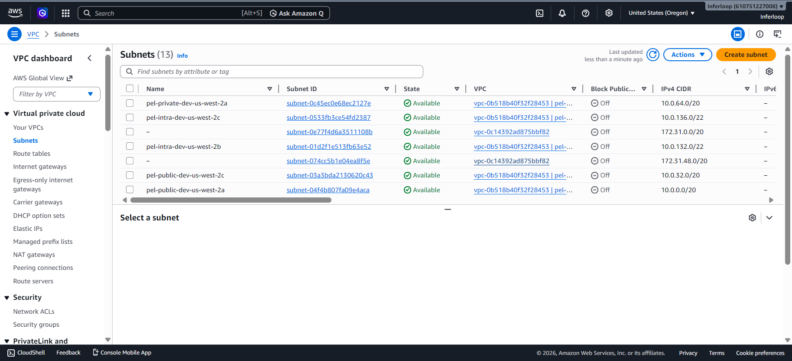
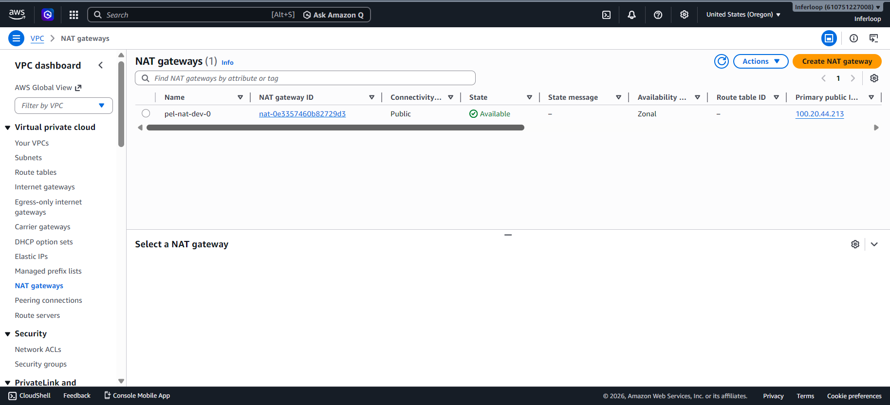
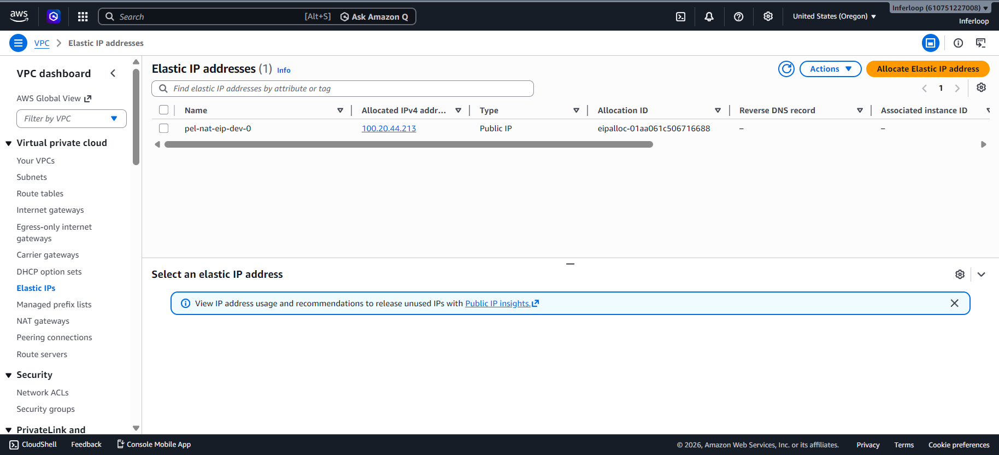
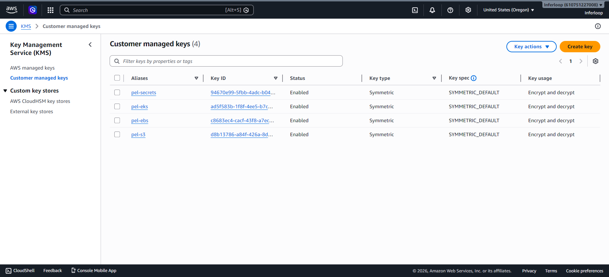
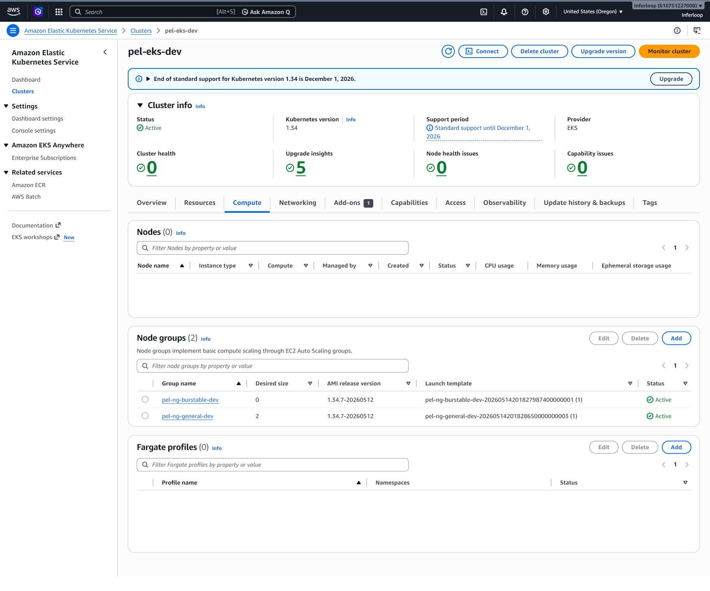
Platform layer — ArgoCD & pods


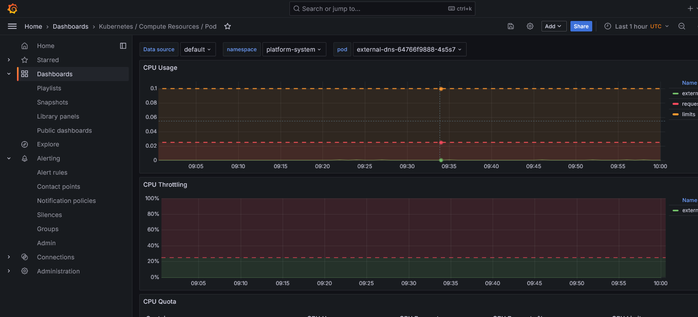
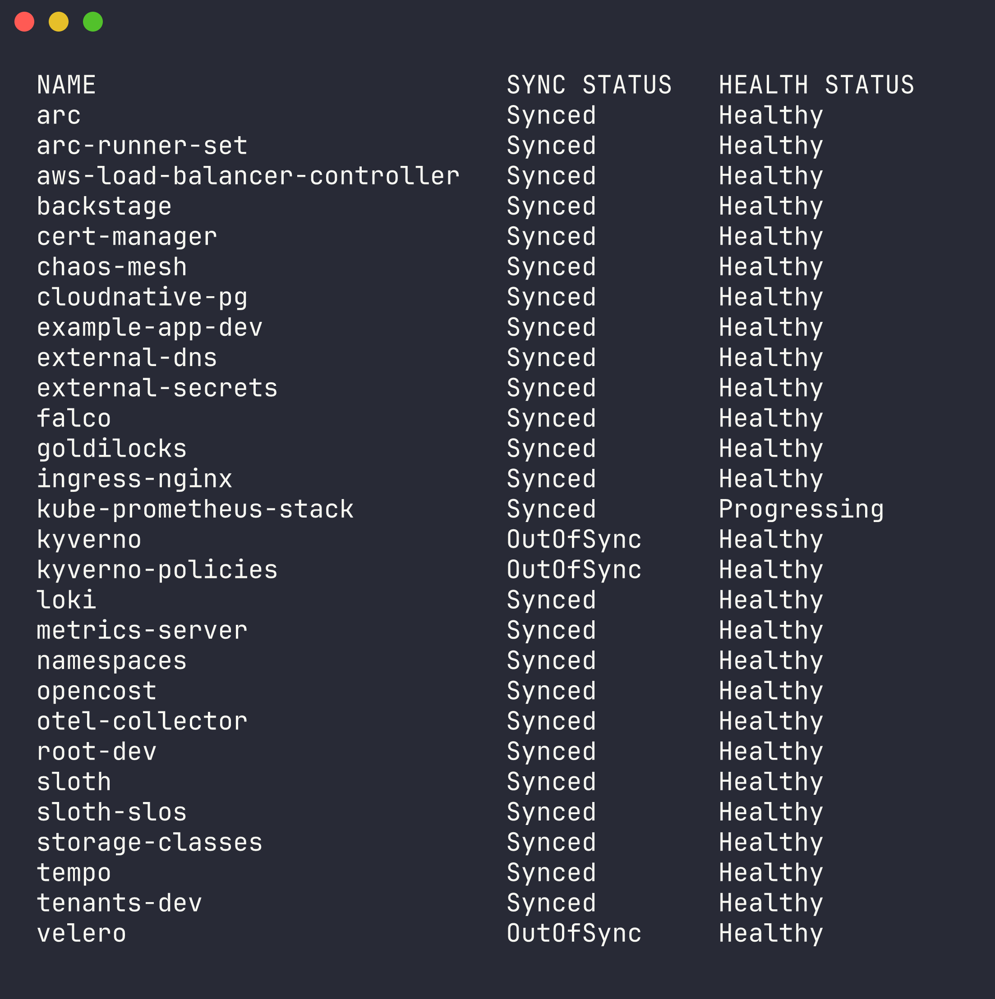
Observability — what we read while debugging
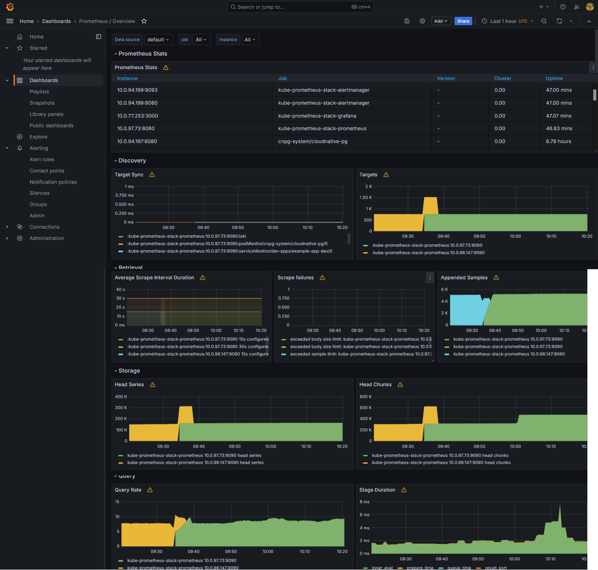
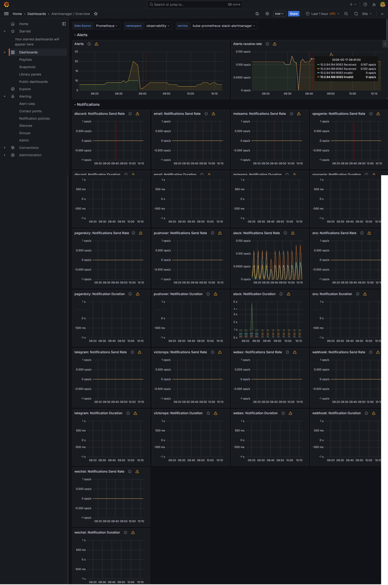
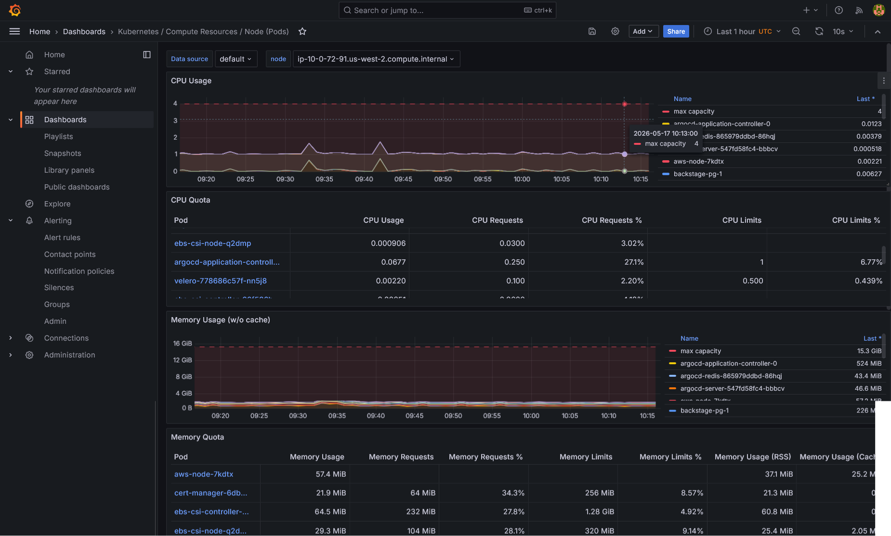
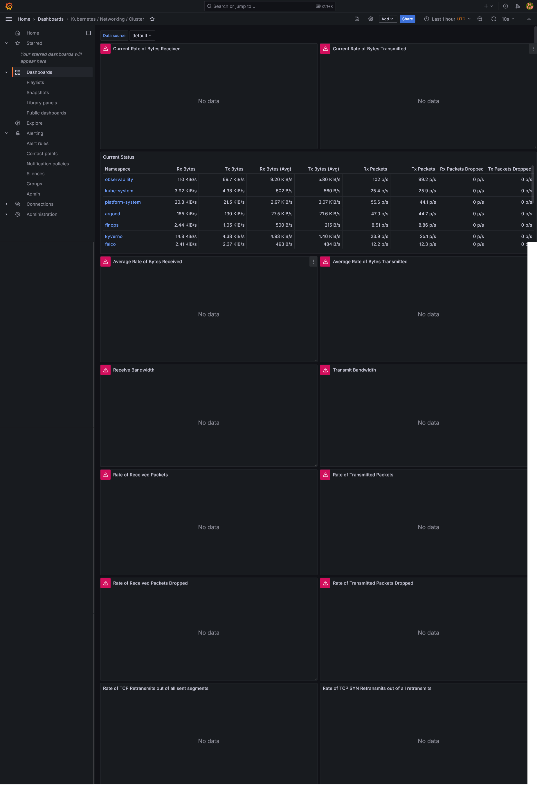

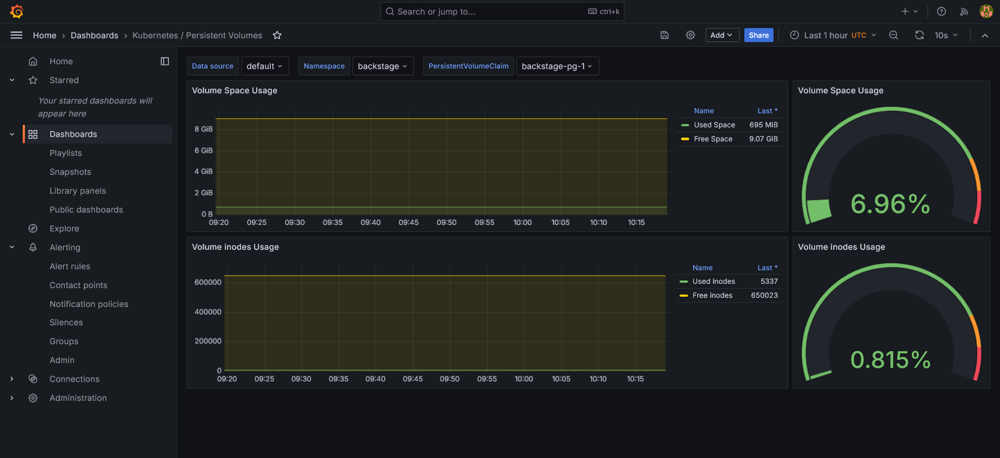
FinOps — OpenCost & cost labels
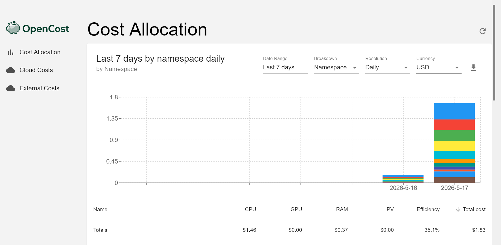
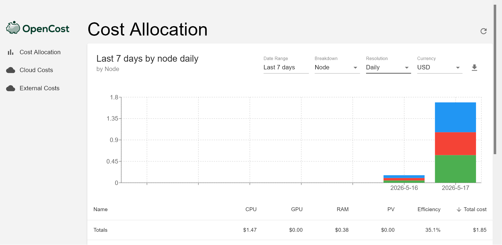

Reliability — chaos, backup, security
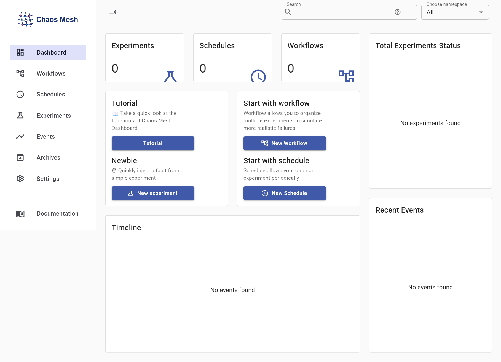
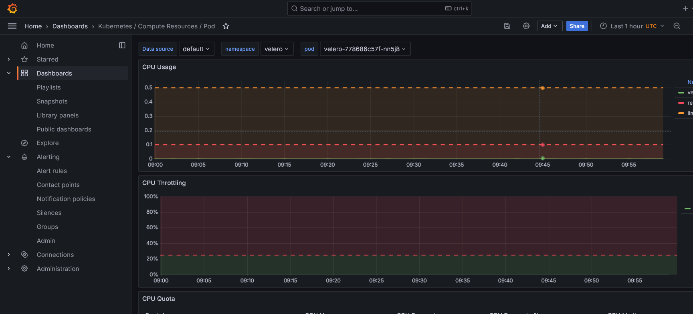
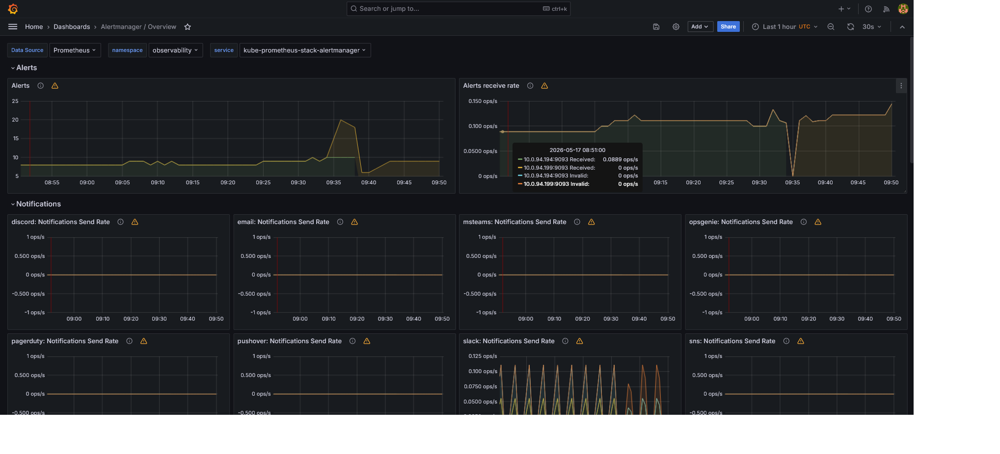